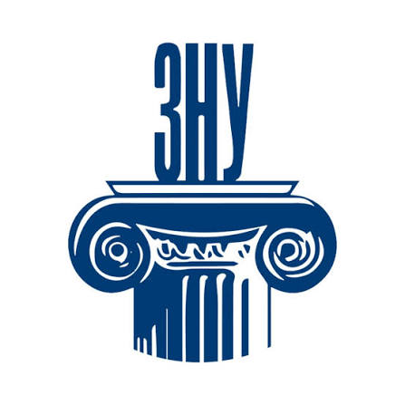

Факультет соціальної педагогіки та психології
Факультет Запорізького національного університету, створений у 1993 році. Тут поєднуються психологія, педагогіка, дошкільна, початкова та спеціальна освіта, театральне мистецтво і графічний дизайн.
Про факультет
На факультеті навчаються майбутні психологи, вчителі початкових класів, вихователі закладів дошкільної освіти, логопеди, актори та дизайнери. Освітні програми діють на бакалаврському, магістерському та освітньо-науковому рівнях.
Випускники факультету працюють за фахом не лише в Україні, а й в інших країнах.

Кафедри факультету
Дошкільної та початкової освіти; акторської майстерності; педагогіки та психології освітньої діяльності; психології; соціальної педагогіки та спеціальної освіти; дизайну.
Контакти деканату
Адреса: 69095, м. Запоріжжя, вул. Гоголя, 118 (VIII корпус, кімн. 212)
Телефон: (061) 228-75-45
E-mail: zubtsova@znu.edu.ua